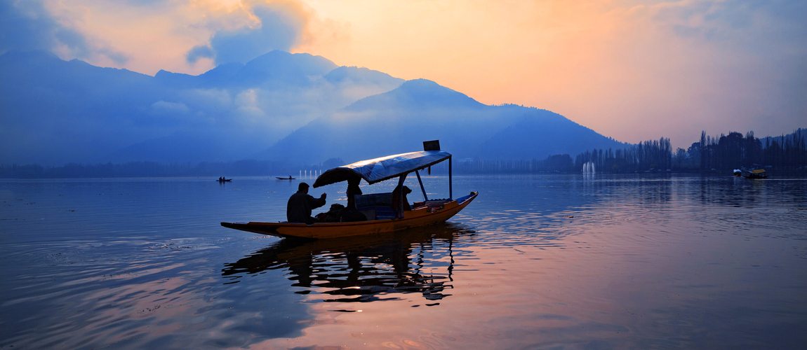
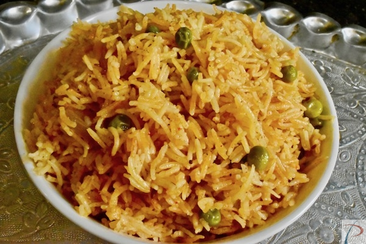
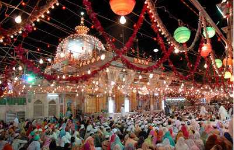
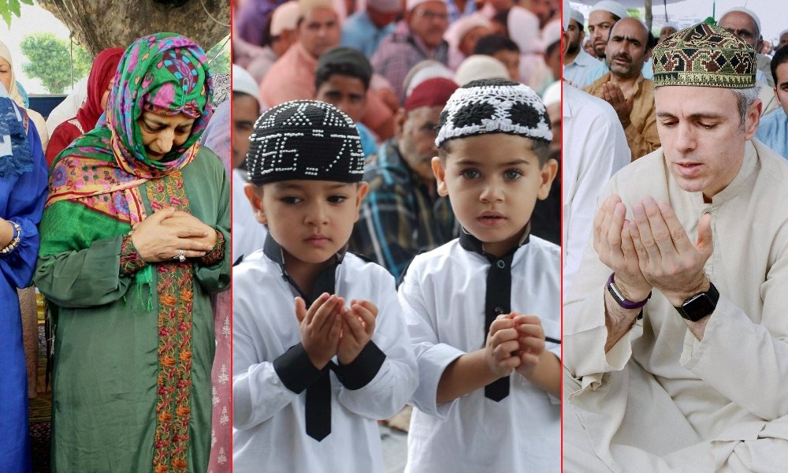

Jammu & Kashmir

About jammu and kashmir
Jammu and Kashmir is home to several valleys such as the Kashmir Valley, Chenab Valley, Sindh Valley and Lidder Valley.
Some major tourist attractions in Jammu and Kashmir are Srinagar, the Mughal Gardens, Gulmarg, Pahalgam, Patnitop and Jammu.
Every year, thousands of Hindu pilgrims visit holy shrines of Vaishno Devi and Amarnath which has had significant impact on the state's economy.
Kashmir Valley is one of the top tourist destinations of India.
Gulmarg, one of the most popular ski resort destinations in India, is also home to the world's highest green golf course. Tourism has suffered a lot during past thirty years and it is still in mess.
People associated with tourism and other private businesses are facing potential challenges and always suffer huge losses due to the unprecedented situation in the territory.
Food items in J&K
- Mutton Rogan Josh

The Mutton Rogan Josh, like many other delicacies in the country, has a Mughal connection to it. With every bite, apart from a handful of meat, you will also taste some fried onions, fresh yoghurt, and the punch of loads of red chilli powder.
If you wonder where the red tinge comes from, it is from the red chilli powder! The Rogan Josh will be the best introduction to the traditional food of Kashmir for you.
- Modur pulav

Modur Pulao is a Kashmiri Sweet Pulao prepared using dry fruits and nuts. It is a delicious aromatic rice prepared using a surplus amount of ghee. It is a flavorful concoction of spices and nuts.
You will be amazed while cooking as all your senses will be occupied with the flavour emanating from the cinnamon, cloves, bay leaves and nuts added to the rice. Try this sweet pulao from your usual pulao and you will be preparing it more often.
Famous festivals in jammu and kashmier
Urs

Eid Ul Fitr is celebrated on the last day of a month-long fasting in Ramzan or Ramadan. Namaz is offered six times on this day and fast is broken with feasting. Exchange of sweets and wearing new clothes, meeting relatives and sharing wishes completes this peaceful festival.
Eid ul Azha or Bakra Eid is celebrated in the second half of the year when a goat, camel or a sheep is sacrificed in every Muslim Household. It takes its origin from their principle of Kurbani or Sacrifice.
Eid-ul Fitr

The two most important festivals of Muslims are celebrated in Kashmir in the full-fledged extravaganza. Kashmir being the Muslim majority region, Muslim festivities witness a huge participation.
Although Eid is a festival celebrated throughout the world and in the rest of India too, with great buzz, Kashmir's magic makes Eid here a delight to celebrate.